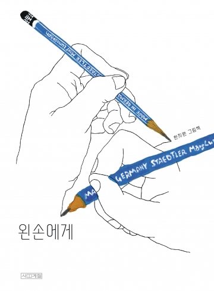

책 소개
제목: 왼손에게
저자: 한지원
출판사: 사계절
내용 요약: 운 좋게 일을 다하는 오른손, 늘기만 하고 예쁘지 못한 건 다 가진 왼손.
독서토론 활동 안내
친구들! '왼손에게'를 읽고 다양한 활동에 참여해 봅시다. 아래 활동들은 패들렛(Padlet)을 통해 진행됩니다. 여러분의 생각과 느낌을 자유롭게 표현해 주세요.
패들렛 활용 방법
1. 선생님이 공유한 패들렛 링크에 접속합니다.
2. 오른쪽 하단의 '+' 버튼을 클릭하여 새 글을 작성합니다.
3. 여러분의 생각, 그림, 사진 등을 자유롭게 올려주세요.
4. 친구들의 글에 댓글과 좋아요를 남길 수 있습니다.
나눔 이야기
책 내용 확인하기(꼼꼼하게 읽고 답하기)
- (표지 이야기) 앞 표지에서 오른손과 왼손을 찾아보세요.
- (표지 이야기) 앞 표지에서 오른손은, 왼손은 어떤 손이 그린 것 같나요?
- (표지 이야기) 뒤 표지는 누가 본 모습인가요? 그림 모습이 보이게 눈을 움직여보세요.
- 오른손이 억울한 까닭으로 오른손이 하는 일은?
- 왼손이 억울한 까닭으로 왼손은 무엇을 하나?
- 오른손과 왼손은 서로를 탓한다. 뭐라고 탓하나?
- 오른손이 다쳐서 어떻게 되었나?
- "고마워." 하고 말한 왼손에게 오른손은 어떻게 하나? (뒤 표지 참고)
책 내용과 관련한 이야기 나누기(학생들 경험 이끌어내기)
- 왼손을 쓸 때 어떤가요?
- 왼손잡이는 생활하기 어떤가요?
- 책에 없는 것으로 오른손이 하는 일은?
- 왼손을 쓸 때 불편한 경험은?
- 왼손을 다쳤다면 어떤 불편함이 있을까?
- 나도 열심히 했는데 아무것도 하지 않는다고 억울한 적은 없나?
논제와 의제
논제: 토론할 주제
- 오른손잡이가 좋다.
- 오른손은 억울하다.
- 초등학생이 메니큐어를 발라도 되나?
- 모기에 물렸을 때는 벅벅 긁어야 한다.
의제: 토의할 주제
- 두 손을 모두 다 잘 쓰기 위해서는 어떻게 해야 할까?
- 집에 모기를 없애는 방법은 뭐가 있을까?
- 오른손과 왼손이 함께할 때 좋은 것은?